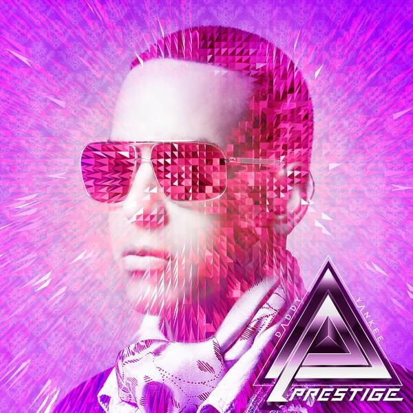

Trayectoria musical
Es considerado como el «rey del reguetón», tanto por los críticos como por los fanáticos de la música.10Nota 1 Yankee acuñó la palabra «reguetón» en 1991 para describir el nuevo género musical que estaba surgiendo en Puerto Rico y posteriormente en el resto de América Latina.
Album más reconocido

- Watch That Man
- Aladdin Sane (1913–1938–197?)
- Drive-In Saturday
- Panic in Detroit
- Cracked Actor
- Time
- The Prettiest Star (1973 Version)
- Let's Spend the Night Together
- The Jean Genie
- Lady Grinning Soul